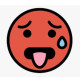

Imp:Heat stroke
Cond:Bad
Act:RBR
Diet:PO
Please:
1.CBC,BUN, Cr, Na, K, CL,Ca, Phos, Mg, Uric acid, BS, AST, ALT, ALK, CPK, U/A, PT, PTT, INR
2.CXR
3.ECG
4.NGT Fix
5.ABG
6.Folly Fix and check I/O
انواع :
نوع یک Heat edema یا تورم و ادم پاها و مچ پا ها در سنین بالا : جهت رفع ادم گرمایی درمان کانزرواتیو است، استراحت کند و پاها را بالا بگیرد، محیط خنك باشد.
توجه شود که جهت درمان ادم گرمایی از لازيکس و و دیورتیك نباید استفاده کرد.
نوع دو ضایعه Malaria rubra یا lichen tropicus یا عرق سوز شدن : راشهای قرمز ماکولو پاپولر خارش دار در اثر التهاب حاد مجاري عرق میباشند.
جهت درمان از آنتی هیستامین، کلرهگزیدین، کالامین، تعویض لباس، پوشیدن لباس نخی، استروئید موضعي توصیه می شود . توجه شود که از پودر تالک برای درمان عرق سوز استفاده نشود، باعث تشدید میشود. اگر روی ضایعات عفونت با استاف سوار شد، از اسید ساليسيليك ۱٪ سه بار در روز جهت ضدعفوني محل یا پماد موپیروسین استفاده شود.
اسپاسم گرمایی heat tetanus : به دنبال کاهش سدیم معمولا در افرادی که در گرما فعالیتی مثل دویدن انجام میدهند، بصورت گرفتگی ساق پا بروز میکند.
جهت درمان جایگزینی وریدی نمک و مایع استراحت در محیط خنك جایگزینی گلوکز و پتاسیم در صورت نیاز .
خستگی گرمایی Heat stress : ناشی از کاهش سدیم و دهیدراسیون که درجه حرارت مرکزی بدن به بیش از ۴۰ درجه سانتیگراد میرسد و با سردرد و گیجی و استفراغ کرامپ های عضلانی تاکی کاردی افت فشار خون همراه است و ممکن است به طرف گرمازدگی پیشرفت کند.
گرمازدگی Heat stroke :تغییر وضعیت منتال و افزایش درجه حرارت مرکزی بدن به بیش از ۴۰ درجه سانتیگراد با آثار خستگی گرمایی به علاوه تشنج دلیریوم اقدامات هماچوری آسیب کبدی میوگلوبین نوری ترومبوسیتوپنی ادرار غلیظ و پوست معمولاً خشک
نکات
1: برای درمان رابدومیولیز دیورز قلیایی ایجاد کنید برای این کار سه امپول NAHCO3را در یک لیتر DW5% رقیق کنید و با سرعت 200ml/hانفوزیون کنید.
2: در صورت تشنج از دیازپام 10mg IV/IMاستتفاده کنید.
3: طبق یک قانون در بیماران مبتلا به تغییر وضعیت منتال، نالوکسان تیامین و گلوکوز هایپراسمولار وریدی تجویز می گردد.
تشخیص های افتراقی: بیماری تیروئید، مسمومیت دارویی، سندروم نورولپتیک بدخیم بدخیم ،ضایعه داخل جمجمه.
NMS 1️⃣
2️⃣ دلیریوم ترمنس
DKA 3️⃣
4️⃣ هایپوناترمی
5️⃣ هایپرتیروئیدیسم و تیروتوکسیکوز
6️⃣ مننژیت
7️⃣ سپسیس
Tetanus 8️⃣
9️⃣ هیپرترمی malignant
🔟 Closed head trauma
Cerebral hemorrhage 1️⃣1️⃣
1️⃣2️⃣ انسفالوپاتی کبدی / اورمیک
1️⃣3️⃣ مسمومیت دارویی : آمفتامین و کوکائین